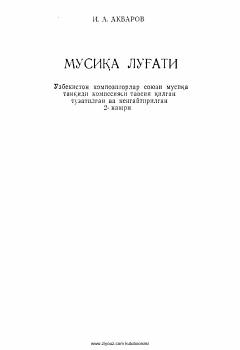

MLMusiqa san'atiga oid atamalar, tushunchalar va nazariy ma'lumotlarni qamrab olgan izohli lug'at.
Ushbu lug'at musiqa san'atining turli sohalari, jumladan xalq ijodiyoti, musiqa nazariyasi, janrlar va cholg'u asboblari bo'yicha atamalarni qamrab olgan. Kitobda Sharq va G'arb musiqa terminlari, maqomlar hamda o'zbek bastakorlari ijodiga oid tushuntirishlar 600 ga yaqin atama, rasmlar va notalar misolida keltirilgan.